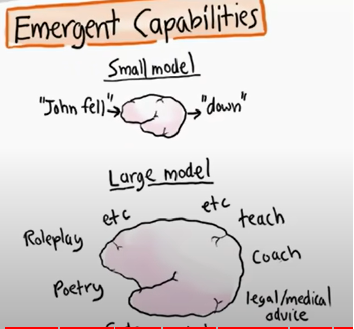
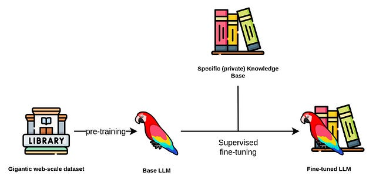
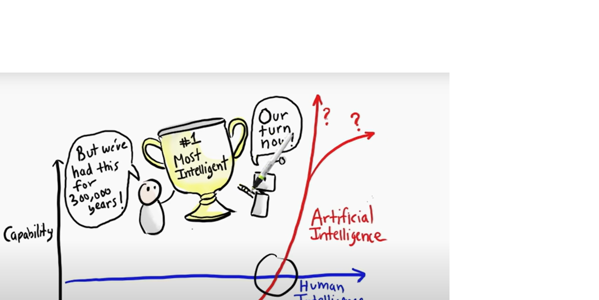
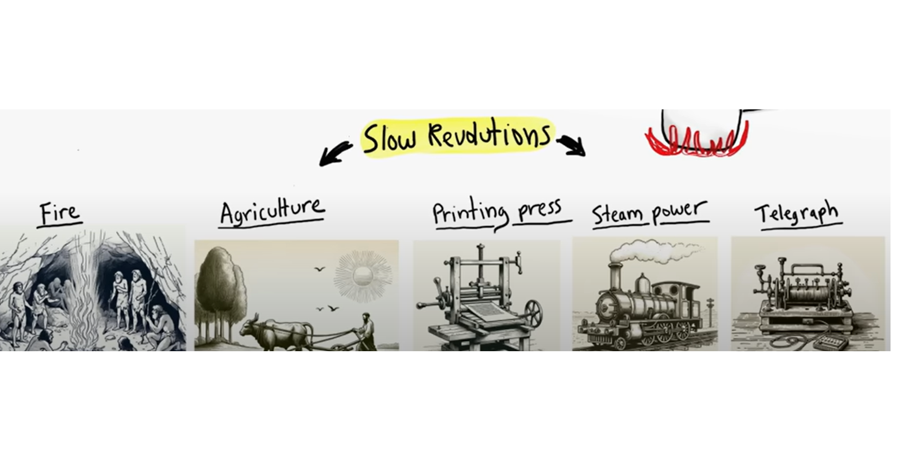
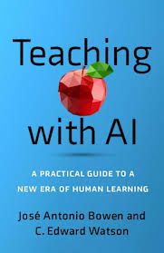
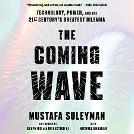

Zahid Asghar, QAU
MS Public Policy and Governance , MPhil Economics and MS-ESME, GCU, Lahore
AI Won’t Replace Humans — But Humans With AI Will Replace Humans Without AI
What is AI?
Artificial Intelligence (AI):
The broad concept where machines simulate human intelligence.
AI allows machines to perform tasks like decision-making, speech recognition, and problem-solving.
Examples:
- Self-driving cars
- Virtual assistants like Siri or Alexa
What is Machine Learning (ML)?
Machine Learning (ML):
A subset of AI that enables machines to learn from data and improve performance over time.
ML doesn’t require explicit programming for each task.
Types of ML:
- Supervised Learning: Uses labeled data.
- Unsupervised Learning: Finds hidden patterns in unlabeled data.
- Reinforcement Learning: Learns through rewards and penalties.
Examples: - Netflix recommendation system - Spam filters in email
What is Natural Language Processing (NLP)?
Natural Language Processing (NLP):
A branch of AI focused on the interaction between computers and human (natural) languages.
Helps machines understand, interpret, and respond to human language.
Applications: - Sentiment analysis (understanding opinions) - Chatbots and language translation tools
Examples: - Google Translate - Virtual Assistants
Generative AI
Generative AI:
A form of AI that creates new content—whether it’s text, images, music, or other media—by learning from patterns in existing data.
Uses deep learning models such as transformers (like GPT) and GANs (Generative Adversarial Networks).
Examples: - GPT-4o for text generation - DALL-E for creating images from text descriptions - AI-generated music or art
Traditional AI vs. Generative AI
Traditional AI
Definition:
- Analyzes existing data to uncover patterns, trends, or insights.
Purpose:
- Understand and summarize what’s already there.
Techniques: - Statistical analysis, clustering, classification.
Examples: - Business reports summarizing sales performance. - Tools like Google Analytics offering insights based on historical data.
Generative AI
Definition:
- Focuses on creating new content by learning from existing patterns.
Purpose:
- To generate something new—whether it’s text, art, or even videos.
Techniques: - Deep learning models, transformers.
Examples: - GPT generating essays, DALL-E creating new images, AI composing music.
Generative AI in a Nutshell




LLMs




Generative AI in a Nutshell

Traditional AI vs. Generative AI (Comparison)
| Feature | Traditional AI | Generative AI |
|---|---|---|
| Function | Summarizes and analyzes existing data | Creates new content based on learned patterns |
| Output | Insights, summaries, analysis of existing data | New text, images, music, etc. |
| Examples | Business reports, trend analysis, sentiment analysis | AI-generated images, articles, music |
| Technologies Used | Statistical models, clustering, classification | Neural networks (GANs, transformers) |
Key Takeaway
- Artificial Intelligence (AI) is the broad field enabling machines to mimic human intelligence.
- Machine Learning (ML) is a technique within AI, focused on learning from data.
- NLP allows AI to understand and interact with human language.
- Generative AI creates new, original content based on learned patterns.
- Traditional AI analyzes existing data to provide insights, while Generative AI creates something entirely new.
New Wave of Technology
- What does the wave of technology mean for humanity?
- Historical discoveries: Fire, the wheel, printing press, steel, harnessing electricity
- Transformation of human civilization through technological advancements
Advanced AI and Biotechnology
- Benefits: Unlock secrets of the universe, Cure diseases, Create a healthier, sustainable world
The Dangers
- Manipulating DNA: implications for individuals and ecosystems
- Choice: Unparalleled possibilities vs. unimaginable perils
- Exponential speed of change in technology (e.g., LLMs)
The Rise of AI
Four years ago, no one believed in LLMs, now everyone talks about them
Future: Superintelligence in the next decade?
Question: How do we respond?
The Dilemma
Replicating our unique intelligence
The Luddite reaction: fears, bans, moratoriums
Challenge: balancing immense benefits and potential perils
The Containment Problem
Technology spreads exponentially, nearly impossible to stop
Examples: Industrial Revolution, AI, Synthetic biology
Inventions cannot be uninvented; knowledge proliferates
What are you?
What are you? Explain in one sentence to a 10 year old.
What are you? Explain in two sentences to a university student.
What are you? Explain to a university teacher.
What are you? Explain to an economics research scholar.
Some more prompting
What role could and should generative AI play for supporting effective and engaging evidence-based learning for economists?
What challenges AI poses to the traditional role of the teacher in the classroom?
What challenges AI poses to policy integrity and evaluation of policies?
Fiscal Policy Advisor
How do 1% increase in GST affects inflation and its consequences on poor segments of the society?
What will Iqbal say to youth about use of Social Media
Allama Iqbal, known for his deep reflections on spirituality, selfhood (Khudi), and societal progress, would likely have a nuanced view of social media’s impact on youth. Here’s what he might say:
1. Distraction from Purpose:
Iqbal would likely be concerned about social media’s ability to distract youth from their true purpose. He often emphasized the need for deep self-reflection and personal growth, and he might view the constant scrolling and superficial interactions on social media as hindrances to achieving Khudi. He might say, “The pursuit of likes and followers should not replace the pursuit of self-realization and greater goals.”
2. Lost Sense of Identity:
Iqbal believed in the importance of individual and cultural identity. He might see social media as contributing to a loss of self, where youth are too often influenced by external validation and trends rather than their inner values and cultural heritage. He could warn that “In a world of filters and illusions, do not lose your true self. Your identity is not what others see online, but what you discover within.”
3. Potential for Positive Change:
Despite his concerns, Iqbal would recognize the potential of social media as a powerful tool for positive change. He might encourage the youth to use these platforms to raise awareness about important issues, foster meaningful connections, and promote justice and knowledge. He could say, “Use your voice on these platforms as a means to awaken and uplift, not just to entertain.”
4. Spiritual and Intellectual Balance:
Iqbal would likely urge the youth to balance their time on social media with activities that promote intellectual growth and spiritual reflection. He might remind them that while social media can be a tool for learning and connection, it should not replace the deeper, more personal journey of seeking knowledge and spiritual fulfillment. He might caution, “Do not let fleeting moments of entertainment steal the time meant for the pursuit of wisdom and self-enlightenment.”
5. The Power of Influence:
Iqbal would be keenly aware of social media’s power to influence minds. He would advise youth to be discerning in their consumption of content, warning them not to fall prey to misinformation or hollow trends. He might say, “Just as a gardener tends to what he plants, so too must you guard your mind from the weeds of falsehood and idle talk.”
In summary, Iqbal would likely see both the dangers and the opportunities in social media. He would call on the youth to use these platforms wisely, ensuring they foster self-growth, preserve cultural identity, and contribute meaningfully to society, rather than getting lost in the distractions of the digital world.
Race between Education and Technology

Many a times technology races ahead of education. This leads to social pain and inequality. The whole educational system has to revolutionize to keep up. Well, our world has always been in a race between technology and education. Usually, these two go hand in hand, but there are some points in history where technology races so far ahead that education can barely keep pace.
The Role of AI in Idea Generation
AI can assist in generating ideas, refining questions, and clarifying thought processes.
Humans still need to iterate and prototype, but AI can generate a high volume of ideas, which humans often struggle with.
The best way to have a good idea is to have lots of ideas. Humans will need to continue the process of prototyping, testing, and iterating, but humans consistently struggle to produce large quantities of different and new ideas.’
Comming Wave & Jobs
“AI offers vast tools for augmenting workers and enhancing work. We must master these tools and make them work for us.” David Autor
As per David Autor, the problem is that older models assumed technology ” might raise some boats more than others, but would’nt lower any boats. However, as digital technology transformed the globaly economy there was “lots of evidence people were made worse off.”
Let me give you a quick historical example. In the 15th century, technology raced ahead as a great piece of technology was invented: the printing press, which allowed books to be printed much cheaper than ever before. Unfortunately, only a small fraction of the population knew how to read, leading to massive social conflicts and inequality. Ultimately, the whole educational system had to revolutionize to keep up. This led to the birth of the first universities and schools.
“Benjamin Bloom’s 2 Sigma Study”
- “1-to-1 Tutoring: Two Standard Deviation Improvement”
- “Unlocking Potential: From Average to Exceptional Students”
- “AI Tutoring: A Scalable Solution to the 2 Sigma Problem”
“Introducing Khanmigo: Your Personal AI Tutor”
“Enhanced Learning Experience: Socratic Conversations”
“AI Assistance in Math, Programming, and Literature”
“Empowering Students with Personal Coaching”
“Guidance, Academic Support, and Career Counseling”
“AI-Powered Coaching for Every Student”
Two Sigma Problem

AI Writing and Reading Coach
“Collaborative Writing with AI Assistance”
“Enhancing Writing Skills: AI-Student Collaboration”
“Feedback, Guidance, and Improvement in Writing”
“Interactive Reading Comprehension with AI”
“Analyzing Texts, Answering Questions, and Providing Insights”
“Enhancing Critical Thinking and Analysis Skills”
“AI-Powered Teaching Assistant for Teachers”
“Transformative Potential of AI in Education”
“Enhancing AI Capabilities for a Magical Learning Experience”
“Combining Human Intelligence with AI for Educational Advancement”
Paul Samuelson as your Assistant
Give a learning outcomes on consumer theory lecture in 3 points with 15 words for each point
Differentiate between Marshalian and Hicksian demand function, restrict response to 50 words
Explain it in little detail, restrict response to 100 words
Give some mathematics
Provide a real life example
Give slides on Marshallian and Hicksian demand function with learning outcomes
Provide a quiz on Marshallian and Hicksian demand function
The 3 Principles of Macroeconomic Policy Formulation using Gen AI
 Predictive Analytics for Policy Decisions
Predictive Analytics for Policy Decisions
Gen AI can analyze vast amounts of economic data to predict trends such as inflation, unemployment, and GDP growth. This enables policymakers to make more informed decisions by forecasting economic conditions with greater accuracy.
 Real-Time Data Processing and Insights
Real-Time Data Processing and Insights
Gen AI can process real-time economic data from global markets, providing immediate insights into economic shocks, demand fluctuations, and supply chain disruptions. This helps in dynamic policy adjustments to stabilize the economy.
 Scenario Analysis and Policy Simulations
Scenario Analysis and Policy Simulations
AI can simulate multiple policy scenarios, helping policymakers assess the potential outcomes of different strategies. This allows for better risk assessment and policy optimization, ensuring that policies are robust and adaptable to various macroeconomic environments.
These key points emphasize how Gen AI can significantly enhance the process of macroeconomic policy formulation by improving forecasting, decision-making, and scenario planning.
Text to image
Prompt : Create an image for QAU students sitting as a community learners in a classroom.


Old vs New Model

Yet, our educational institutions have not evolved much. We still put people in lecture halls for one-size-fits-all teaching, and many companies only offer a couple of days of training per year. This model is outdated.
Things to be discussed
Customised advanced tools: Policy Advisor, Fiscal Policy Advisor, Economics Expert,…
Coding, Mathematics, Data Analysis …
Technology’s Impact on Humanity
Containment: Can We Do It?
Navigating the Coming Wave
AI and Wars
How Ukraine countered largest every military deployment of Russia
AI and the Future of Work
Prompt
You are hiring a “waiter” The typical daily wage rate is PKR 800. You have 2 candidates. Person 1: Has 1 year(s) of experience in this role. Requests PKR 1100. Person 2: Has 0 year(s) of experience in this role. Requests PKR 900. Who would you hire? You have to pick one.
Explain Solow Growth model to an undergraduate studet in 70 words.
Simulate the Solow growth model and plot the results in a four chart.
Resources
Re-inventing Education for the Digital Age | David Middelbeck | TEDxMünster
Policy Advisor
Fiscal policy advisor
Economics expert
Tutor me
Duolingo
R for economics and Econometrics
Stata ai
curipid.com Lessons in seconds
murf.ai Text to speech
Myheritage
Snythesia video maker
Useful Books (2024)


